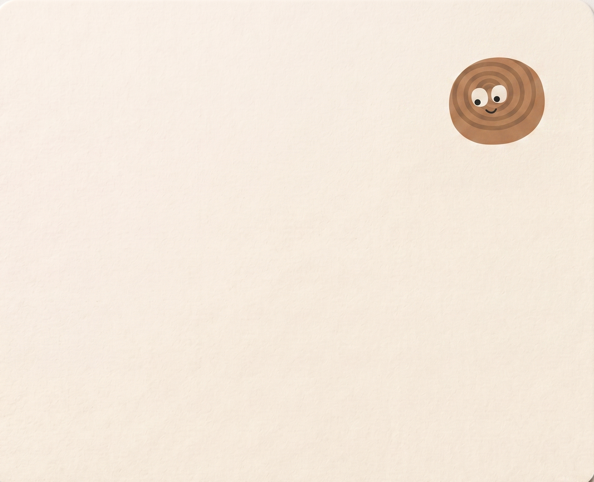

UX · Product · Interaction
Xiangyu Shi.
UX / Product Designer
Designing systems that feel human — from enterprise tools to AI-powered products and playful mobile experiences.
8
Projects
3
Industries
5
Years exp.
View Portfolio
8 case studies
kaleido.app · AI Visual Generation

gameflow.seasun.com · Requirement Pool


gameflow.seasun.com · Iteration Analytics

Enterprise · AI · Mobile · VR